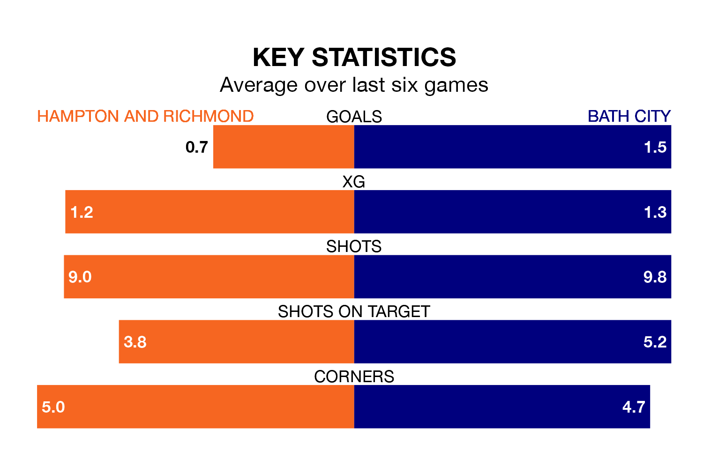

Hampton and Richmond face Bath City at the Beveree Stadium on late Tuesday looking to secure a first win in six National League South games.
Hampton & Richmond have lost two and drawn three matches since they last earned three points – against Hemel Hempstead Town on March 16.
They face a Bath side who have won one and drawn three over that time.
With 67 goals in 42 games so far this season, Bath are scoring more than average in the league with 1.6 goals per game. And they are conceding fewer than average, letting in 49 goals at a rate of 1.2 per game.
Hampton & Richmond, meanwhile, are average scorers, with 1.4 goals per game. They have conceded 1.2 goals per game.
In the last 10 years, Hampton & Richmond and Bath have played each other on 14 occasions. They won five each, and they drew four times.
On average, Hampton & Richmond scored 1.2 goals and the Romans 1.1 in those matches.
Their last meeting was on August 26, when Bath won 3-1 at home.
The hosts are sixth in the table after 42 games, of which they have won 19 and drawn 12, earning 69 points.
City are one place behind Hampton & Richmond in seventh, with 18 wins and 13 draws putting them on 67 points.
Hampton & Richmond's last match was on Saturday, a 1-1 draw against Taunton Town.
Bath drew 1-1 with Tonbridge Angels last time out, also on Saturday.
Updated: 14:47 (UTC), 09/04/24